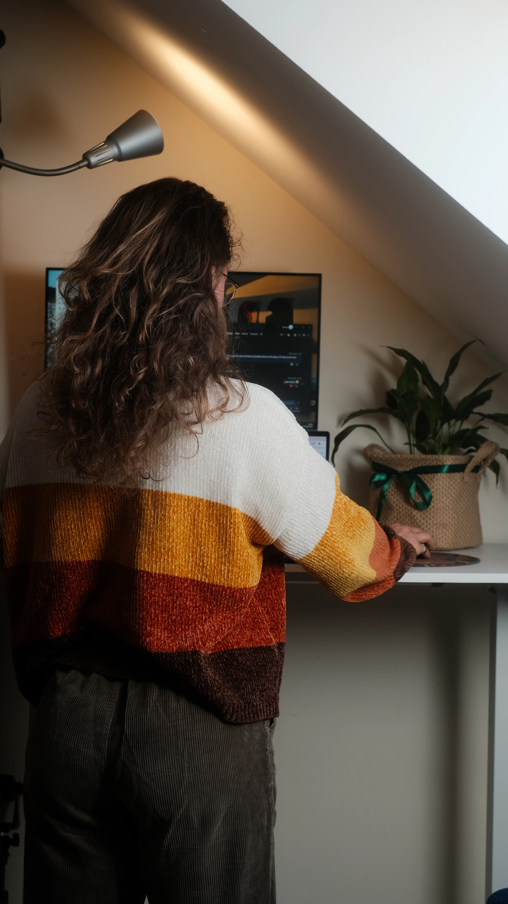

Hey, I'm Vika
I turn chaos into clarity.
In learning, communication,
and everything in between.

How I can help
01. Learning design & solutions
What problem are you trying to solve?
That's where I start.
We will dig into what your learners actually need to know and be able to do.
From there, I shape clear objectives and structure the learning around them, so every decision has a purpose.
I apply adult learning principles and focus on the thinking behind the learning: how it's designed, how people process it and how it translates into behaviour.
The result is learning that's practical and engaging.
Not just something people click through.
I lead on strategy, instructional design and content. Visual design and development can be brought in or integrated with your internal team, depending on what the project needs.
02. Communication & resources
Not everything needs a full-blown eLearning programme.
The solution should match the problem and balance learning complexity with real-world constraints like time and budget.
Sometimes that looks like a persuasive presentation or an emotive video. Other times it's an infographic, a graph or an interactive document.
The goal is simple: get the message across clearly and effectively by distilling information into the format that makes most sense.
Whatever the medium, I lean into storytelling and visuals to aid engagement and understanding.
So whether it's a full learning experience or a simpler resource, you get something proportionate, purposeful and built to work.
03. End-to-end delivery & flexible support
I can manage the full process from ideation to delivery.
This includes project management, storyboarding and scripting, LMS setup, quality assurance, and troubleshooting. I can also source the right talent for visual design, voiceover, animation, or translation when needed.
Whether you want to hand it over completely or need someone to slot into your team and fill the gaps, I adapt to what works best for you.
-
Good energy, low friction
Adaptable and perceptive, with a knack for bridging gaps between people, ideas, and requirements — your new favourite person to work with.
-
9+ Years of experience
Shaped by work with leading UK agencies and independent projects — equally at home in structured corporate settings and fast-moving startups.
-
Eclectic background
Spanning science & technology, pharma, education, finance, health & safety, sales and product development — bringing a broader lens to every project.
Behind the scenes
As you can imagine, most of my work sits behind NDAs.
But these examples should give you a good feel for how I approach things.
And if you want the full picture, then feel free to look at my CV.
From face-to-face to eLearning academy
Context
An established face-to-face training provider got in touch to help expand their offering into
eLearning.
Challenge
No existing infrastructure or real experience with digital learning, plus strict awarding body
requirements and a limited budget.
How I tackled it
- End-to-end project management, while setting the team up to confidently manage and scale the academy post-handover
- Structured and storyboarded courses in Articulate Rise and Storyline
- Brought in a freelance designer to support the internal team
- Managed LMS implementation and testing
- Worked closely with SMEs and handled multiple review rounds
- Navigated approval processes across two awarding bodies
Impact
The initial course was approved and launched successfully, unlocking further course development and
establishing a scalable digital learning offering.
What I'd do differently
Factor in more time for the approval process. It always takes longer than it says on the tin!
Turning technical features into engaging learning
Context
A client needed to train employees on newly developed products: not just what they are, but how
they work and how to communicate their value.
Challenge
The content was highly technical and extensive, but needed to be turned into something engaging and
useful for sales teams.
How I tackled it
- Visited the client site to get hands-on with the product and speak directly with the team
- Built a practical understanding of how it works and what makes it stand out to customers
- Asked targeted questions to uncover what makes the product valuable and different from competitors
- Translated product features into engaging learning interactions
- Structured content around real-world application rather than theory
- Storyboarded interactive modules in Articulate Rise
Impact
The result was an engaging and usable training experience that helped employees understand the
product and bring it to life for customers.
What I'd do differently
Set clearer expectations around asset provision early on. Chasing things mid project slowed it down more than it needed to.
From conflicting global input to an effective solution
Context
A global tech organisation needed a cultural awareness module developed for multiple regions and
levels.
Challenge
Conflicting inputs, evolving requirements and a gap between what stakeholders were asking for and
what learners actually needed.
How I tackled it
- Brought in via an agency, but stepped into a more consultative role to help shape the direction
- Reframed the problem and brought structure to an evolving brief
- Synthesised input from a global stakeholder group
- Shaped and storyboarded a scenario-led module in Evolve
- Advised on learning approach and content prioritisation
- Helped reduce inefficiencies to stay on track with budget
Impact
The project moved from ambiguity to an effective learning experience that better addressed both
company culture challenges and learner needs.
What I'd do differently
Be firmer on initial workshops and early content alignment. Skipping them felt quicker upfront, but led to more iterations later, as expected.
Making complex science make sense for sales teams
Context
A global pharmaceutical client needed training to bring sales teams up to speed on product
information, including medical background, benefits and competitors.
Challenge
Highly technical scientific content needed to be accurate, but accessible and engaging for a
non-specialist audience.
How I tackled it
- Acted as the bridge between scientists and creatives, translating dense information into compelling narratives and clear visuals, while maintaining scientific accuracy
- Worked closely with subject matter experts to extract key messages and cut unnecessary detail
- Structured content into digestible, visual learning journeys
- Storyboarded modules in Storyline to speed up build time
- Briefed designers to bring complex concepts to life
- Iterated based on feedback from both technical and creative teams
Impact
The final learning experience enabled sales teams to communicate product value confidently and
accurately.
What I'd do differently
Be firmer in guiding SMEs towards what's needed for learning, rather than trying to accommodate everything.
What's it like to work with me?
-
Client
"Vika has worked with me on various projects and clients. She has always delivered on time and on budget. Her work ethic has been excellent.
These projects included creating materials and presentations for fund raising. She is adept at understanding and getting up to speed across various sectors.
She is professional and has an acute mind and understands requirements quickly. She possesses the ability to process large volumes of data and distill this into salient content.
The quality of work was always of high quality. She worked well with our team and clients demonstrating strong IQ and EQ to understand our needs and the purpose of the end product."
Donald B, Mataxis
-
Manager
"Vika was an absolute pleasure to work with; not only was she a gifted and skilled learning designer, but she also had a fantastic way of working collaboratively with both colleagues and clients.
Her approach was very much human-led and focused on getting the best outcome for the learner, and she achieved this through intelligent and probing discussion with subject matter experts and focus groups, distilling the information into a format that was engaging, easy to understand and embedded the key learning objectives."
Matt H, Sponge Learning
-
Collaborator
"Vika is a talented writer and project manager with a strong ability to craft engaging narratives and excellent communication and client-facing skills.
She found me online while seeking a designer for a new client project. Vika developed the storyboards, and I designed and built the eLearning course.
The pilot course was a resounding success, and the client was so impressed that they immediately engaged us for a much larger project. Vika's ability to translate complex information into compelling and easy-to-understand narratives was invaluable.
Working with Vika was an absolute pleasure, and I highly recommend her for your next project. I look forward to collaborating with her again soon!"
Sam B, Freelance designer
Let's grab a coffee
Why don't we talk through your project over a (virtual) coffee and see if we're a good fit?